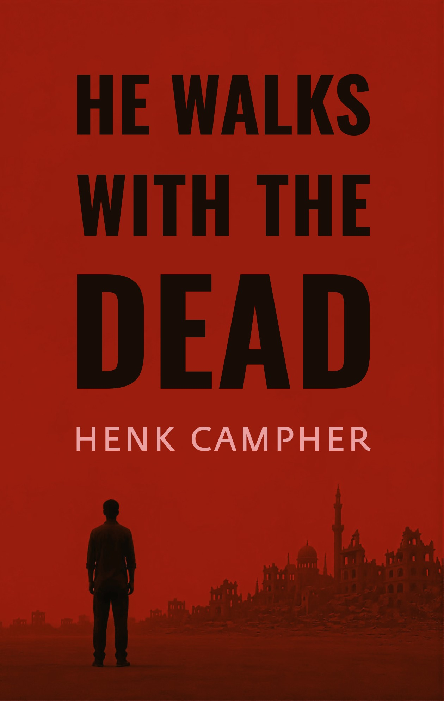

A novel
He Walks With The Dead
Inspector Khaled works murders in a city three years into a war the rest of the world stopped watching. He carries the dead with him, the weight of every unfinished case pressing into his shoulders until the file closes. Some he's been carrying for years.
This one is Youssef. A shopkeeper. No meetings, no influence, no name that made men step aside. Just tea, offered before anyone said why they'd come. If a man like that isn't safe in his own living room, every door in the city becomes a question.
Khaled has lost almost everything to this war. Somewhere along the way, he lost something else too: the weight that used to settle on him whenever someone died by another person's hand, not the war's.
Youssef is where he starts to feel it again.
Also by Henk
What Would Tequila Do
A collection of 52 sharp, stand-alone chapters about work, leadership, judgment, failure, and the corporate machinery that slowly sands interesting people smooth. No grand thesis, no five-step system, just useful provocations for making better decisions, keeping your nerve, staying weird, and thriving despite the corporate bullshit.
whatwouldtequilado.comAbout
Henk Campher writes from the seams, the places between the stories we usually tell.
He grew up walking the streets of prison compounds where his dad was a senior officer overseeing political prisoners under apartheid, and on a farm without electricity in the Karoo, in the middle of South Africa.
Henk became an anti-apartheid activist, a conscientious objector during his own military service, and later a trade unionist. In post-apartheid South Africa, he built the Proudly South African campaign for Nelson Mandela.
He ended up fighting the system his dad had helped build.
They were on different sides.
Since then, he has lived and worked across three continents, from running activist campaigns around the world to helping build businesses trying, in their own way, to make society a little better. Different places. Different work. Much the same questions about people, power, and what we do with both.
He now lives in Hawaii.
He has been a storyteller for most of his adult life.
This is the first of it he's letting out.